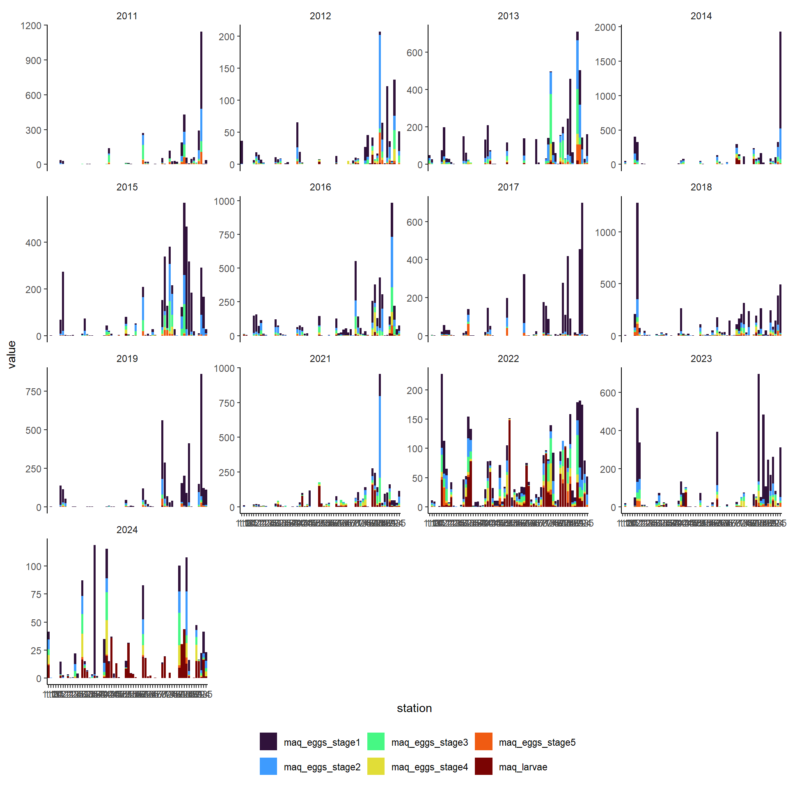
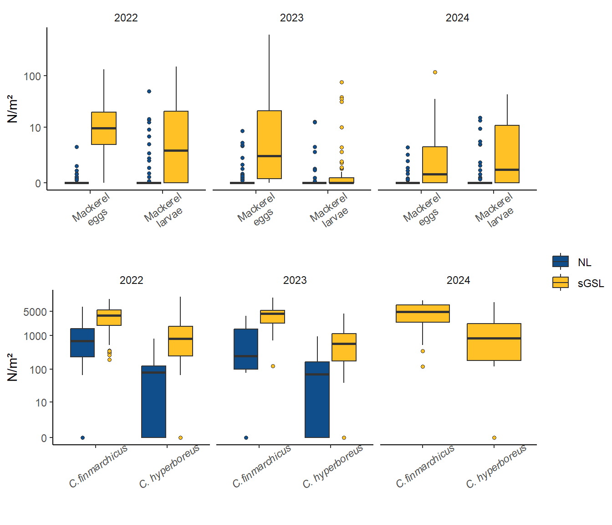

5.0_Exploration_field
2025-02-01
# SET-UP##### my packages ################################################################################
## CRAN
cran.packages <- c('tidyverse','boot','magrittr','ggpmisc','ggpubr','ggthemes','mgcv',
'fields', 'inlabru', 'sf', 'PresenceAbsence', 'verification', 'raster',
'scales', 'nlme','nls.multstart', 'stringr', 'ggforce',"readxl", "marmap")
install.this <- cran.packages[!(cran.packages %in% utils::installed.packages()[,"Package"])]
if(length(install.this)>=1) install.packages(install.this)
dummy <- lapply(cran.packages, require, character.only = TRUE)
## github
git.packages <- c('catchR','DFOdata','CCAM', 'INLA')
install.this <- git.packages[!(git.packages %in% utils::installed.packages()[,"Package"])]
if('catchR' %in% install.this) devtools::install_github("iml-assess/catchR@eli_parallel")
if('DFOdata' %in% install.this) devtools::install_github("iml-assess/DFOdata")
if('CCAM' %in% install.this) devtools::install_github("elisvb/CCAM")
if('INLA' %in% install.this)install.packages("INLA",repos=c(getOption("repos"),INLA="https://inla.r-inla-download.org/R/stable"), dep=TRUE)
dummy <- lapply(git.packages, require, character.only = TRUE)
##### source R directory ############################################################################
#invisible(sapply(list.files(pattern="[.]R$", path="R/", full.names=TRUE), source))
##### my ggplot theme ################################################################################
theme_set(theme_mackerel()) # theme_mackerel from catchR
update_geom_defaults("line", list(size = 1)) # no idea why somethimes I get fat lines otherwise
##### passwords databases #############################################################################
source("../../bdOracle.R")
source(paste0("utils/basemap.R")) #if error "plot new has not been call", restart R, package compatibility issues
source(paste0("utils/mackerel_fun_incubation.R")) # Mackerel incubation .
source(paste0("utils/spatial_projections.R"))#
source(paste0("utils/extract_biochem.R"))
source(paste0("utils/extract_T0_10.R"))
source(paste0("INLA/Mesh.R"))
source(paste0("INLA/INLA_ZAG_covar_Stations.R"))
source(paste0("INLA/INLA_ZAG_covar_Stations_CV.R"))
source(paste0("utils/nlme_boot.R"))
source(paste0("INLA/INLA_tw_covar_Stations.R"))
source(paste0("INLA/INLA_tw_covar_Stations_CV.R"))
source(paste0('INLA/plotSpatialFieldCL.R'))
source(paste0('INLA/plotSmoother.R'))
source(paste0('INLA/model_validation.R'))
source(paste0('INLA/get_prediction_grid.R'))
source(paste0('../biochem/PL_Get_SampleID_Batch.R'))
source(paste0('../biochem/PL_Get_Counts_Batch.R'))
source(paste0('../biochem/PL_Read_Filter.R'))
source(paste0('../biochem/PL_Taxonomic_Grouping.R'))
log10p1_trans = function() scales::trans_new("log10p1", transform=function(x) log10(x+1), inverse=function(x) (10^x)-1)#inverse function is necessary for legend
#source(paste0("R/",year_to_report,"/INLA/getvar.R")) # needs to be retoughtnew=T
pdir = "../../"
load(file=paste0(pdir,"data/",my.year,"/DEP.RData"))
load(file=paste0(pdir,"data/",my.year,"/eggt1.RData"))
dat=eggt1
1 Eggs stages
datpie<- dat %>% dplyr::select(latitude, longitude, year,maq_eggs_stage1, maq_eggs_stage2, maq_eggs_stage3, maq_eggs_stage4, maq_eggs_stage5, maq_larvae, DEP) %>% group_by(year) %>% mutate(maxDEP=max(DEP), radius=DEP/maxDEP) %>% filter(year> 2010)
library(scatterpie)
world <- map_data('world')
p <- ggplot(world, aes(long, lat)) +
geom_map(map=world, aes(map_id=region), fill=NA, color="black") +
coord_quickmap(xlim=c(-66.5,-60), ylim=c(45.5,49.5))
p + geom_scatterpie(aes(x=longitude, y=latitude, r=0.2),
data=datpie, cols=c("maq_eggs_stage1", "maq_eggs_stage2", "maq_eggs_stage3", "maq_eggs_stage4", "maq_eggs_stage5", "maq_larvae"), color=NA,alpha=.8) +
#geom_scatterpie_legend(datpie$radius, x=-60, y=45) +
scale_fill_viridis_d(name="", option="turbo") +facet_wrap(~year)+theme(legend.position = "bottom")datbar<- dat %>% dplyr::select(station, year,maq_eggs_stage1, maq_eggs_stage2, maq_eggs_stage3, maq_eggs_stage4, maq_eggs_stage5, maq_larvae, DEP) %>% pivot_longer(maq_eggs_stage1:maq_larvae) %>% group_by(year) %>% mutate(maxDEP=max(DEP), radius=DEP/maxDEP) %>% filter(year> 2010)
ggplot(datbar, aes(x=station, y=value)) +
geom_bar(aes(fill=name), position="stack", stat="identity")+
scale_fill_viridis_d(name="", option="turbo") +facet_wrap(~year, scales="free_y")+theme(legend.position = "bottom")
ggplot(datbar, aes(x=year, y=value, group=year)) +
geom_bar(aes(fill=name), position="stack", stat="identity")+ scale_x_continuous(breaks=seq(1970,my.year,5))+
scale_fill_viridis_d(name="", option="turbo") +facet_wrap(~station)+theme(legend.position = "bottom")
2 temperatures
basemap2 +
geom_point(data = dat %>% filter(year > 2010), aes(x = longitude, y = latitude, color = temperature0_10), shape = 19, size=4) +
facet_wrap(~year) +
scale_color_viridis_c(option="turbo", limits=c(4,18))+
theme_few()+ theme(legend.position="bottom")
min(dat[which(dat$year<2010), "temperature0_10"])
## [1] 5.08
max(dat[which(dat$year<2010), "temperature0_10"])
## [1] 17.3filey= paste0(pdir,"data/CTD_casts_0_10m/IML2024012_Moyenne_Bionet_10m_surface.dat")
temp <- read.delim(filey, header = FALSE, sep=",",skip = 1, col.names = c("file","station","date","latitude", "longitude", "prof.max", "temperature0_10","salinity","sigma_t"))
basemap2 +
geom_point(data = temp, aes(x = longitude, y = latitude, color = temperature0_10), shape = 19, size=4) +
scale_color_viridis_c(option="turbo", limits=c(4,18)) +
theme_few()+ theme(legend.position="bottom")
mean(temp$temperature0_10)
## [1] 13.437353 temperature ~ spawning timing
eplo<- list(dat %>% group_by(year) %>% summarize(t010 = mean(temperature0_10)),
dat %>% group_by(year) %>% tally(),
dat %>% group_by(year) %>% filter(temperature0_10 > 7 & temperature0_10 < 15 ) %>% tally() %>% rename(nspaw=n)) %>%
purrr::reduce(full_join) %>% mutate(prop_spaw= nspaw/n) # proportion of station with favorable conditions # not used
load(paste0(pdir,"results/",my.year,"/spawning/predicted_propspawn_doy", my.year, ".RData"))
tabAR<- read.delim(paste0(pdir,"results/",my.year,"/spawning/table_nlmeAR_", my.year, ".txt")) %>%
dplyr::select(year, date.med)
#filter trajet si year==2022
prop<- left_join(tabAR , nlme.fixpredsAR1) %>% dplyr::filter(doy < date.med)%>% dplyr::group_by(year) %>% dplyr::summarize(prop=sum(prob))
eplo<- left_join(eplo, prop)
my.formula <- y ~ x
eplo<- eplo %>% mutate(for_fill= ifelse(year %in% c(1999, 1991), "fit",
ifelse(year %in% c(2006, 2017,2019,2024), "timing",
ifelse(year %in% c(2022,2023), "uncertain", "OK"))))
library(mgcv)
gam1 <- gam(prop ~ t010, data=eplo[2:39,], family=betar)
plot(gam1, all.terms=T)
pdata<- data.frame(t010=5:18)
pdatafit<- predict(gam1, newdata=pdata, type="link", se=T) %>% as_tibble()
inv.logit = function (x) 1/(1+exp(-x))
pdatafit<- bind_cols(pdata,
pdatafit %>% mutate(uci = inv.logit(fit + (3.291 * se.fit)),
lci=inv.logit(fit - (3.291 *se.fit))))
pdatafit %>% ggplot(aes(x=t010, y=inv.logit(fit))) + geom_line() +geom_ribbon(aes(ymin=lci, ymax=uci), alpha=0.3)+
geom_label(data=eplo,aes(x=t010, y=prop,label=year, fill=for_fill)) +
scale_fill_manual(values=c("#ff6a6a","white", "dodgerblue", "seagreen3"), guide="none")+
ylab("Proportion of spawning before median date") +xlab("Mean temperature 0-10m during the survey")
eggs<- readRDS(paste0(pdir,"data/",my.year,"/PL_Bongo_Scomber_eggs_larvae_Counts_L2_",my.year,".RDS")) %>%
filter(year %in% 2022:2024) %>% mutate(mission_name=substring(mission_name, 1,11),
mission_name=gsub(mission_name, pattern="IML-20", replacement="IML-"),
mission_name=gsub(mission_name, pattern="IML20", replacement="IML"))
zi <- read.csv2("S:/Zooplancton/8. ZooImage/ZIRes/Zooimage3_results.csv", dec=".")
zi <- zi %>% filter(Project=="Mackerel survey",Year >2021, GearType=="Bongo") %>%
dplyr::select(Cruise, Year,Station, T_Ch4.6_m3,T_Cf.Cg4.6_m3, T_Pcal.Micro.Scol_m3, T_Tem.Eury_m3,
T_Ch4.6_m2,T_Cf.Cg4.6_m2, T_Pcal.Micro.Scol_m2, T_Tem.Eury_m2) %>%
dplyr::rename(mission_name=Cruise, year=Year, station=Station) %>%
mutate(station=gsub(station, pattern="-", replacement="_"),
mission_name=gsub(mission_name, pattern="IML-20", replacement="IML-"),
mission_name=gsub(mission_name, pattern="IML20", replacement="IML-"))
eggs_cal<- left_join(eggs,zi) %>%
mutate(Region= if_else(grepl(station, pattern="4R")|
grepl(station, pattern="3P")|
grepl(station, pattern="SP"), "NL", "sGSL"))
library(ggsci)
bpdat<- eggs_cal %>% ungroup() %>% dplyr::select(year,Region, station,T_Cf.Cg4.6_m2, T_Ch4.6_m2,maq_eggs_stage1_5, maq_larvae) %>% pivot_longer(4:7) %>%
mutate(#value=if_else(!grepl(name, pattern="egg"), value/1000, value),
name1=recode_factor(name, T_Cf.Cg4.6_m2 = "C.finmarchicus", T_Ch4.6_m2= "C. hyperboreus",maq_eggs_stage1_5 = "Mackerel\neggs", maq_larvae= "Mackerel\nlarvae"),
cat1=recode_factor(name, T_Cf.Cg4.6_m2 = "Calanus spp.", T_Ch4.6_m2= "Calanus spp.",maq_eggs_stage1_5 = "Mackerel", maq_larvae= "Mackerel")
)
bp<- ggplot(data=bpdat,aes(y=value, x=as.factor(year), fill=name1)) + labs(x="", y="N/m²", fill="", col="")+ facet_wrap(~Region)+
geom_boxplot(outlier.stroke=0.02, outlier.shape=21) + scale_fill_jco() + theme(legend.position="bottom", legend.background = element_blank())
bp +scale_y_continuous(trans="log10p1",breaks=c(0,10,100,1000, 5000))
bp1<- ggplot(data=bpdat %>% filter(cat1=="Calanus spp."),aes(y=value , x=name1, fill=Region)) + labs(x="", y="N/m²", fill="", col="")+ facet_wrap(~year, scales="free_x")+
geom_boxplot(outlier.stroke=0.02, outlier.shape=21) + scale_fill_manual(values=c( "dodgerblue4","goldenrod1")) + theme(legend.position="bottom", legend.background = element_blank(), axis.text.x = element_text(face="italic", angle=35,vjust=0.75))
bp1<- bp1 +scale_y_continuous(trans="log10p1",breaks=c(0,10,100,1000, 5000))
bp2<- ggplot(data=bpdat %>% filter(cat1=="Mackerel"),aes(y=value , x=name1, fill=Region)) + labs(x="", y="N/m²", fill="", col="")+ facet_wrap(~year, scales="free_x")+
geom_boxplot(outlier.stroke=0.02, outlier.shape=21) + scale_fill_manual(values=c( "dodgerblue4","goldenrod1")) + theme(legend.position="bottom", legend.background = element_blank(), axis.text.x = element_text( angle=35 , vjust=0.75))
bp2<- bp2 +scale_y_continuous(trans="log10p1",breaks=c(0,10,100,1000, 5000))
ggarrange( bp2,bp1, ncol=1, common.legend = T, legend="right")